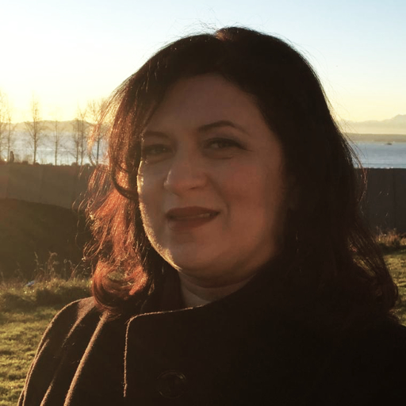

Keynote Presentations
Scaling NeRF Up and Down: Big Scenes and Real-Time View Synthesis
Peter Hedman, Senior Research Scientist, Google

Abstract
Neural Radiance Fields (NeRF) can synthesize convincing novel viewpoints in a scene using only photographs as input. At first NeRF representations were not practical for interactive 3D applications: they could only synthesize images within a limited viewing volume and were only suitable for offline rendering, even with powerful GPUs.
In this talk I will focus on these two challenges: 1) scaling up the size of the scenes that can be reconstructed by NeRF, and 2) scaling down hardware requirements needed to render NeRFs in real-time. I will cover our work on extending NeRF volumes to large and unbounded scenes, and how NeRFs can be converted into practical representations suitable for real-time rendering on commodity devices.
Finally, I will show some applications that NeRF has already enabled and will explore challenges that remain before NeRFs could be used as assets in real-time 3D graphics pipelines.
Bio
Peter Hedman is a senior research scientist at Google, where he works on problems at the intersection of computer graphics and vision. His recent work focuses on neural radiance fields and real-time rendering.
He received his PhD from the CS Department at UCL in 2019, where he was advised by Gabriel Brostow and Tobias Ritschel, and he received his MSc from Helsinki University in 2015.
He received the prize for the most distinguished master’s thesis from Finnish Academic Association for Mathematics and Natural Sciences, the 2016 Rabin Ezra scholarship for doctoral students in computer graphics, imaging and vision, the ICCV Best Paper Honorable Mention Award in 2021, as well as the Best Student Paper Honorable Mention at CVPR 2022.
TBA
Natalya Tatarchuk, Distinguished Technical Fellow and Chief Architect, VP, Wētā Tools at Unity

Abstract
TBA
Bio
Natalya Tatarchuk (@mirror2mask) is a graphics engineer and a rendering enthusiast at heart, currently focusing on driving the state-of-the-art rendering technology, graphics performance and character content creation in her role as a Distinguished Technical Fellow and Chief Architect, VP, Wētā Tools at Unity.
Prior to that, led the Graphics team at Unity, as VP of Graphics for the Unity Editor and Engine. Before that she was a AAA games developer, working on innovative cross-platform rendering engine and game graphics for Bungie's Destiny franchise, as well the Halo series, such as Halo: ODST and Halo: Reach, and AMD Graphics Products Group where she pushed parallel computing boundaries investigating advanced real-time graphics techniques, and graphics hardware design and APIs.
Natalya has been encouraging sharing in the games graphics community for several decades, largely by organizing a popular series of courses such as [Advances in Real-time Rendering](http://advances.realtimerendering.com/), [Open Problems in Real-Time Rendering](http://openproblems.realtimerendering.com/) and [Rendering Engine Architecture](http://enginearchitecture.realtimerendering.com/) at SIGGRAPH, and convincing people to speak there. It seems to be working.
Blurring the Line between Physics and Imagination: A Glimpse of Neural Rendering's Future
Marco Salvi, Principal Research Scientist, NVIDIA

Abstract
In this talk, I will discuss the transformative impact of machine learning techniques, which are breathing new life into real-time rendering. Advances in novel scene representations and image reconstruction approaches have emerged alongside sophisticated generative models that do not rely on the physics of light transport.
These developments are bringing about a major shift in how we generate images, challenging traditional rendering pipelines. I will explore some of the possibilities that lie ahead as these distinct approaches may converge, seamlessly blending physics and imagination to create realistic and accessible computer-generated imagery.
Bio
Marco Salvi is a Principal Research Scientist at NVIDIA, where he works on developing high-performance software and hardware rendering algorithms for the post-Moore's law era.
His research interests span a broad range of topics, from anti-aliasing and order-independent transparency to ray tracing hardware, texture compression and neural rendering. Marco has made numerous contributions to rendering APIs, including raster order views and micro-meshes, and his early work on real-time neural image reconstruction has led to the development of NVIDIA DLSS.
Prior to becoming a researcher, Marco worked at Ninja Theory and LucasArts architecting advanced graphics engines, performing low-level optimizations and developing new rendering techniques for games on two generations of Playstation and XBOX consoles.
Marco holds an M.S. in Physics from the University of Bologna, Italy.
Other Keynote Speakers
We are working on having a keynote presentation each day of the conference, we will announce the remaining speakers in the near future.